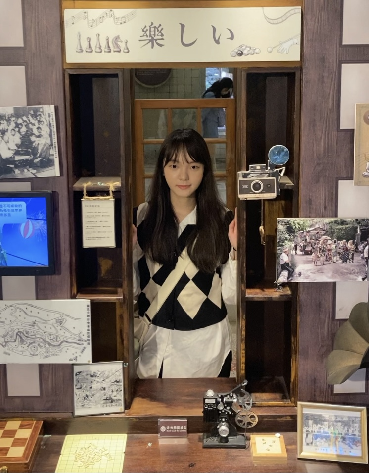

關於我
在此部落格中，將分享我在大學生活、音樂練習及追劇日常中的點滴。
 |
許沛甄 (Dorothy)國立台北教育大學資訊科學系 二年級 |
大家好，我是許沛甄，目前就讀於國立台北教育大學資訊科學系大二，興趣是看劇、聽音樂、彈吉他與彈鋼琴。
透過這次個人網站的規劃，我了解到如何把自己的興趣、想法整理成一個清晰的版面。在作品區結合了圖片和文字元素，希望能讓網站的呈現更加多元。
在此部落格中，將分享我在大學生活、音樂練習及追劇日常中的點滴。
 |
許沛甄 (Dorothy)國立台北教育大學資訊科學系 二年級 |
大家好，我是許沛甄，目前就讀於國立台北教育大學資訊科學系大二，興趣是看劇、聽音樂、彈吉他與彈鋼琴。
透過這次個人網站的規劃，我了解到如何把自己的興趣、想法整理成一個清晰的版面。在作品區結合了圖片和文字元素，希望能讓網站的呈現更加多元。
| 劇名 | 經典台詞與心得 |
|---|---|
| 《浪漫醫生金師傅》 | 「你不必非得變得跟誰一樣，只要活出自己的樣子就好，在這個年代，努力未必就能得到回報，競爭的激烈程度難以言喻，你們的出路也越來越窄，但這世上無論何處，都不會有你在找的標準答案，你要找的不是答案，而是你想做的事，懂嗎？找到你真心喜歡，又能做得開心的事，那件事，就會是你的答案。」 |
| 《請回答1994》 | 「Present 這個英文單詞有兩個意思『禮物』和『現在』，說不定對我們來說，最珍貴的禮物就是現在，正是我們眼前的這段時間。」 |
| Like a star | ⭐⭐⭐ |
| Fight | ⭐⭐⭐⭐ |
| Flaming | ⭐⭐⭐⭐⭐ |


寫程式累了的時候，彈一下吉他或看一集好劇放鬆心情，再繼續加油！